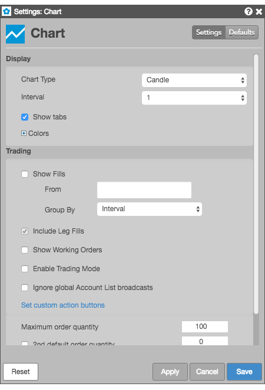
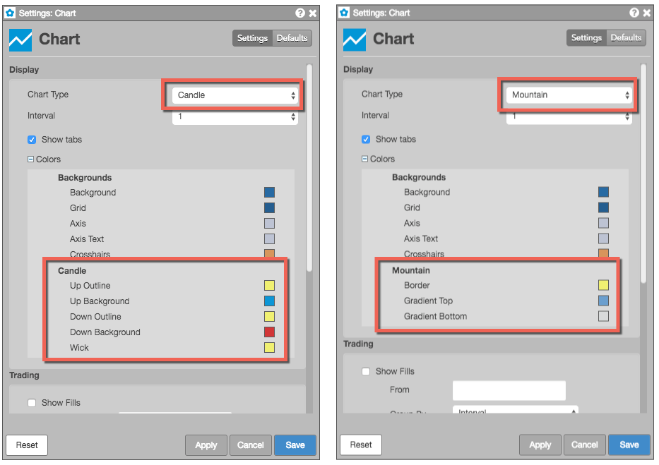

These settings affect only the selected Chart widget. To update the default settings with these value for newly-opened Chart widgets, or to apply them to existing opened widgets, click Defaults.

Right-click in the widget to open the context menu and select Settings.
| Setting | Description |
|---|---|
| Chart Type | Select the type of chart to display. |
| Interval | Select the time interval that the chart displays market data. |
| Show tabs | Whether to enable tabs in the widget. |
| Colors | Define colors for chart elements. |
These settings let you customize the colors for different aspects of the selected Chart Type. For example, a Candle chart includes color settings for Candle Up and Candle Down, while a Mountain chart includes settings for Border and Gradient Top.

| Setting | Description |
|---|---|
| Show Fills | Sets whether to display fills on a chart. For more information, see Displaying fills. |
| Include Leg Fills | Sets whether to show leg fills in addition to parent order fills. |
| Show Working Orders | Sets whether to display working orders on a chart. |
| Enable Trading Mode | Sets whether to display MD Trader in the chart for trading. |
| Ignore global Account List broadcasts | Configures the widget to ignore account selections made in an Account List. When checked (enabled), the widget ignores account selections broadcast by an Account List widget. |
| Set custom action buttons | These settings allow you to add or removed custom buttons on the Chart widget for commonly used order types and time-in-force (TIF) order settings. For more information, see Adding an order button to a chart. |
| Maximum order quantity | Sets the maximum quantity allowed per order. |
| 2nd default order quantity | Provides the ability to right-click in the Bids and Asks column at a price level to submit an order with a different default order quantity. To enable this feature, you must check the checkbox and type a quantity in the box to the right of this option. |
| Stop Limit payup (ticks) | Sets the maximum number of ticks away from the Stop trigger price to enter the Limit order. |
(Only visible when the Chart Type setting is Price Distribution)
For more information about these settings, refer to Interpreting the Price Distribution chart.
| Setting | Description |
|---|---|
| Show Initial Balance Area | Sets whether to highlight the letters that comprise the Initial Balance Area on the chart |
| Show Point of Control (POC) | Sets whether to highlight letters that comprise the point of control (POC) |
| Show Time Price Area (TPA) Value Area | Sets whether to display the block showing the range for the TPA Value Area |
| Show TPA Value Area POC | Sets whether to display the POC within the TPA Value Area |
| Show Volume Value Area | Sets whether to display the block showing the range for the Volume Value Area |
| Show Volume Value Area POC | Sets whether to display the POC within the Volume Value Area |
| Show Volume Value Area Bids and Asks | Sets whether to highlight the letters than comprise the Bid and Ask Volume Value area |
| Show Open Marker | Sets whether to display the marker for the session open |
| Show Close Marker | Sets whether to display the marker for the session close |
| Show Last Traded Price (LTP) | Sets whether to highlight the LTP in the price axis |
| Show TPA Summary | Sets whether to display the TPA summary for the session |
| TPA Value Area Percentage | Sets the desired percentage to use when calculating the TPA Value Area |
| Volume Value Area Percentage | Sets the desired percentage to use when calculating the Volume Value Area |
| Bids and Asks Width Percentage | Sets the desired percentage to use when calculating the TPA Value Area |